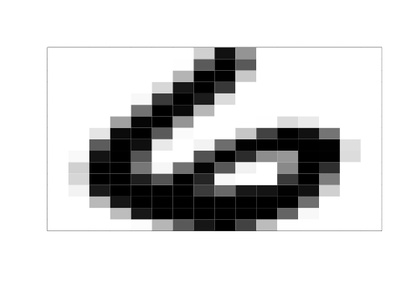
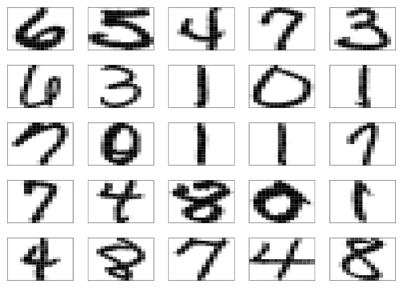
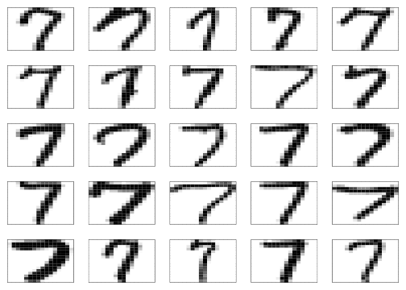

Chapter 1 Data
Data science is a field that intersects with statistics, mathematics, computer science, and a wide range of applied fields, such as marketing, biology, and physics. As such, it is hard to formally define data science, but obviously data are central to data science, and it is useful at the start to consider some types of data that are of interest.
1.1 Baby crawling data
When thinking about data, we might initially have in mind a modest-sized and uncomplicated data set consisting primarily of numbers. As an example of such a data set, a study was done to assess the possible relationship between the age at which babies first begin to crawl and the temperature at the time of first crawling. Participants in the study were volunteers.1 The data set from this study separates the babies by birth month, and reports the birth month, the average age (in weeks) when first crawling for that month, the standard deviation of the crawling ages for that month, the number of infants for that month, and the average temperature during the month when crawling commenced. The data are shown in Table 1.1 below.2
u <- "https://www.finley-lab.com/files/data/BabyCrawling.tsv"
BabyCrawling <- read.table(u, header=T)| BirthMonth | AvgCrawlingAge | SD | n | temperature |
|---|---|---|---|---|
| January | 29.84 | 7.08 | 32 | 66 |
| February | 30.52 | 6.96 | 36 | 73 |
| March | 29.70 | 8.33 | 23 | 72 |
| April | 31.84 | 6.21 | 26 | 63 |
| May | 28.58 | 8.07 | 27 | 52 |
| June | 31.44 | 8.10 | 29 | 39 |
| July | 33.64 | 6.91 | 21 | 33 |
| August | 32.82 | 7.61 | 45 | 30 |
| September | 33.83 | 6.93 | 38 | 33 |
| October | 33.35 | 7.29 | 44 | 37 |
| November | 33.38 | 7.42 | 49 | 48 |
| December | 32.32 | 5.71 | 44 | 57 |
This data set has many simple properties: it is relatively small, there are no missing observations, the variables are easily understood, etc.
1.2 World bank data
The World Bank provides data related to the development of countries. A data set was constructed from the World Bank repository. The data set contains data on countries throughout the world for the years 1960 through 2014 and contains, among others, variables representing average life expectancy, fertility rate, and population. Table 1.2 contains the first five records and then 10 more randomly selected records for these variables in the data set.
| country | year | fertility.rate | life.expectancy | population |
|---|---|---|---|---|
| Andorra | 1978 | 33746 | ||
| Andorra | 1979 | 34819 | ||
| Andorra | 1977 | 32769 | ||
| Andorra | 2007 | 1.180 | 81292 | |
| Andorra | 1976 | 31781 | ||
| Cayman Islands | 1977 | 13840 | ||
| Jamaica | 1992 | 2.855 | 70.45061 | 2423044 |
| Maldives | 1975 | 6.981 | 47.96634 | 134077 |
| St. Vincent and the Grenadines | 1972 | 5.629 | 65.46898 | 92465 |
| Mauritania | 1981 | 6.368 | 54.83644 | 1578670 |
| Oman | 1993 | 6.098 | 68.94666 | 2043912 |
| Bahamas, The | 1966 | 3.893 | 64.68378 | 146364 |
| Angola | 1983 | 7.205 | 40.52824 | 8489864 |
| French Polynesia | 1980 | 3.989 | 64.70556 | 151702 |
| Lesotho | 1974 | 5.780 | 50.29371 | 1122484 |
Notice that many observations contain missing data for fertility rate and life expectancy. If all the variables were shown, we would see much more missing data. This data set is also substantially larger than the baby crawling age data, with 11880 rows and 15 columns of data in the full data set. Each column represents one of the variables. Each row represents one country during one year.
1.3 Email data
It is estimated that in 2015, 90% of the total 205 billion emails sent were spam.3 Spam filters use large amounts of data from emails to learn what distinguishes spam messages from non-spam (sometimes called “ham”) messages. Below we include one spam message followed by a ham message.4
From safety33o@l11.newnamedns.com Fri Aug 23 11:03:37 2002
Return-Path: <safety33o@l11.newnamedns.com>
Delivered-To: zzzz@localhost.example.com
Received: from localhost (localhost [127.0.0.1])
by phobos.labs.example.com (Postfix) with ESMTP id 5AC994415F
for <zzzz@localhost>; Fri, 23 Aug 2002 06:02:59 -0400 (EDT)
Received: from mail.webnote.net [193.120.211.219]
by localhost with POP3 (fetchmail-5.9.0)
for zzzz@localhost (single-drop); Fri, 23 Aug 2002 11:02:59 +0100 (IST)
Received: from l11.newnamedns.com ([64.25.38.81])
by webnote.net (8.9.3/8.9.3) with ESMTP id KAA09379
for <zzzz@example.com>; Fri, 23 Aug 2002 10:18:03 +0100
From: safety33o@l11.newnamedns.com
Date: Fri, 23 Aug 2002 02:16:25 -0400
Message-Id: <200208230616.g7N6GOR28438@l11.newnamedns.com>
To: kxzzzzgxlrah@l11.newnamedns.com
Reply-To: safety33o@l11.newnamedns.com
Subject: ADV: Lowest life insurance rates available!
moode
Lowest rates available for term life insurance! Take a moment
and fill out our online form
to see the low rate you qualify for.
Save up to 70% from regular rates! Smokers accepted!
http://www.newnamedns.com/termlife/
Representing quality nationwide carriers. Act now!From rssfeeds@jmason.org Tue Oct 1 10:37:22 2002
Return-Path: <rssfeeds@example.com>
Delivered-To: yyyy@localhost.example.com
Received: from localhost (jalapeno [127.0.0.1])
by jmason.org (Postfix) with ESMTP id B277816F16
for <jm@localhost>; Tue, 1 Oct 2002 10:37:21 +0100 (IST)
Received: from jalapeno [127.0.0.1]
by localhost with IMAP (fetchmail-5.9.0)
for jm@localhost (single-drop); Tue, 01 Oct 2002 10:37:21 +0100 (IST)
Received: from dogma.slashnull.org (localhost [127.0.0.1]) by
dogma.slashnull.org (8.11.6/8.11.6) with ESMTP id g9180YK15357 for
<jm@jmason.org>; Tue, 1 Oct 2002 09:00:34 +0100
Message-Id: <200210010800.g9180YK15357@dogma.slashnull.org>
To: yyyy@example.com
From: boingboing <rssfeeds@example.com>
Subject: Disney's no-good Park-Czar replaced
Date: Tue, 01 Oct 2002 08:00:34 -0000
Content-Type: text/plain; encoding=utf-8
X-Spam-Status: No, hits=-641.2 required=5.0
tests=AWL
version=2.50-cvs
X-Spam-Level:
URL: http://boingboing.net/#85506723
Date: Not supplied
Disney has named a new president of Walt Disney Parks, replacing Paul Pressler,
the exec who did his damnedest to ruin Disneyland, slashing spending (at the
expense of safety and employee satisfaction), building the craptastical
California Adventure, reducing the number of SKUs available for sale in the
Park stores, and so on. The new president, James Rasulo, used to be head of
Euro Disney. Link[1] Discuss[2]
[1] http://reuters.com/news_article.jhtml?type=search&StoryID=1510778
[2] http://www.quicktopic.com/boing/H/rw7cDXT3W44CTo implement a spam filter we would have to get the data from these email messages (and thousands of others) into a software package, extract and separate potentially important features such as the To: line, the Subject: line, the message body, etc., and then compare spam and non-spam messages to find a method to classify new emails correctly. These steps are not simple in this example. In particular, we would need to become skilled at working with text data.
1.4 Handwritten digit recognition
Correct recognition of handwritten digits by a machine is commonly required in today’s world. For example, the postal service must scan and recognize zip codes on handwritten mail. Roughly speaking, a handwritten digit is scanned and converted to a digital image. To keep things simple we will assume the scanning creates a grayscale rather than a color image. When converting an image to a grayscale digital image, a grid of “pixels” is used to represent the handwritten image, where each pixel has a black intensity value. For concreteness we’ll assume that intensities are recorded on a scale from \(-1\) (no black intensity at all) to \(1\) (maximum black intensity). If the pixel grid is 16 by 16 then the resulting digitized image will contain 256 intensity values, one for each of the \(16\times 16 = 256\) pixels.
For example, here are the data corresponding to one handwritten digit, which happens to be the numeral “6”. Figure 1.1 shows how that digit looks when digitized.
## -1.000 -1.000 -1.000 -1.000 -1.000 -1.000 -1.000 -0.631 0.862 -0.167
## -1.000 -1.000 -1.000 -1.000 -1.000 -1.000 -1.000 -1.000 -1.000 -1.000
## -1.000 -1.000 -0.992 0.297 1.000 0.307 -1.000 -1.000 -1.000 -1.000
## -1.000 -1.000 -1.000 -1.000 -1.000 -1.000 -1.000 -1.000 -0.410 1.000
## 0.986 -0.565 -1.000 -1.000 -1.000 -1.000 -1.000 -1.000 -1.000 -1.000
## -1.000 -1.000 -1.000 -0.683 0.825 1.000 0.562 -1.000 -1.000 -1.000
## -1.000 -1.000 -1.000 -1.000 -1.000 -1.000 -1.000 -1.000 -0.938 0.540
## 1.000 0.778 -0.715 -1.000 -1.000 -1.000 -1.000 -1.000 -1.000 -1.000
## -1.000 -1.000 -1.000 -1.000 0.100 1.000 0.922 -0.439 -1.000 -1.000
## -1.000 -1.000 -1.000 -1.000 -1.000 -1.000 -1.000 -1.000 -1.000 -0.257
## 0.950 1.000 -0.162 -1.000 -1.000 -1.000 -0.987 -0.714 -0.832 -1.000
## -1.000 -1.000 -1.000 -1.000 -0.797 0.909 1.000 0.300 -0.961 -1.000
## -1.000 -0.550 0.485 0.996 0.867 0.092 -1.000 -1.000 -1.000 -1.000
## 0.278 1.000 0.877 -0.824 -1.000 -0.905 0.145 0.977 1.000 1.000
## 1.000 0.990 -0.745 -1.000 -1.000 -0.950 0.847 1.000 0.327 -1.000
## -1.000 0.355 1.000 0.655 -0.109 -0.185 1.000 0.988 -0.723 -1.000
## -1.000 -0.630 1.000 1.000 0.068 -0.925 0.113 0.960 0.308 -0.884
## -1.000 -0.075 1.000 0.641 -0.995 -1.000 -1.000 -0.677 1.000 1.000
## 0.753 0.341 1.000 0.707 -0.942 -1.000 -1.000 0.545 1.000 0.027
## -1.000 -1.000 -1.000 -0.903 0.792 1.000 1.000 1.000 1.000 0.536
## 0.184 0.812 0.837 0.978 0.864 -0.630 -1.000 -1.000 -1.000 -1.000
## -0.452 0.828 1.000 1.000 1.000 1.000 1.000 1.000 1.000 1.000
## 0.135 -1.000 -1.000 -1.000 -1.000 -1.000 -1.000 -0.483 0.813 1.000
## 1.000 1.000 1.000 1.000 1.000 0.219 -0.943 -1.000 -1.000 -1.000
## -1.000 -1.000 -1.000 -1.000 -0.974 -0.429 0.304 0.823 1.000 0.482
## -0.474 -0.991 -1.000 -1.000 -1.000 -1.000
FIGURE 1.1: A digitized version of a handwritten 6.
Looking at the digitized images, it may seem simple to correctly identify a handwritten numeral. But remember, the machine only has access to the 256 pixel intensities, and must make a decision based on them.
Figure 1.2 shows the digitized images of the first 25 numerals in the data set, and Figure 1.3 shows the digitized images of the first 25 numeral sevens in the data set. These give some idea of the variability in how digits are written.5

FIGURE 1.2: The first 25 handwritten numerals, digitized.

FIGURE 1.3: The first 25 numeral sevens, digitized.
1.5 Looking forward
The four examples above illustrate a small sample of the wide variety of data sets that may be encountered in data science. Each of these provides its own challenges. The baby crawling data present challenges that are more statistical in nature. For example, how might the study design (which isn’t described here) affect methods of analysis and conclusions drawn from the study? Similar challenges are also present within the other data sets, but these data sets also present more substantial challenges prior to (and during) the analysis stage, such as how to work with the missing data in the World Bank data set, or how to effectively and efficiently process the email data to extract features of interest.
This book and associated material introduce tools to tackle some of the challenges in working with real data sets, within the context of the R statistical system. We will focus on important topics such as
- Obtaining and manipulating data
- Graphical tools for exploring and summarizing data
- Communicating findings about data that support reproducible research
- Tools for classification problems such as email spam filtering or handwritten digit recognition
- Programming and writing functions in R
1.6 How to learn (the most important section in this book!)
There are several ways to engage with the content of this book and associated materials.
One way is not to engage at all. Leave the book closed on a shelf and do something else with your time. That may or may not be a good life strategy, depending on what else you do with your time, but you won’t learn much from the book!
Another way to engage is to read through the book “passively”, reading all that’s written but not reading the book while at your computer, where you could enter the R commands from the book. With this strategy you’ll probably learn more than if you leave the book closed on a shelf, but there are better options.
A third way to engage is to read the book while you’re at a computer, enter the R commands from the book as you read about them, and work on the practice problems within many of the chapters. You’ll likely learn more this way.
A fourth strategy is even better. In addition to reading, entering the commands given in the book, and working through the practice exercises, you think about what you’re doing, and ask yourself questions (which you then go on to answer). For example after working through some R code computing the logarithm of positive numbers you might ask yourself, “What would R do if I asked it to calculate the logarithm of a negative number? What would R do if I asked it to calculate the logarithm of a really large number such as one trillion?” You could explore these questions easily by just trying things out in the R Console window.
If your goal is to maximize the time you have to binge-watch on Netflix, the first strategy may be optimal. But if your goal is to learn a lot about computational tools for data science, the fourth strategy is probably going to be best.
More correctly, were volunteered by their parents.↩︎
These data were originally retrieved from https://kilthub.cmu.edu/, although the data set since been removed.↩︎
Radicati Group http://www.radicati.com↩︎
These messages both come from the large collection of spam and ham messages at http://spamassassin.apache.org.↩︎
Actually, these data were already pre-processed to get the orientation correct. Actual handwritten digits would be even more variable.↩︎